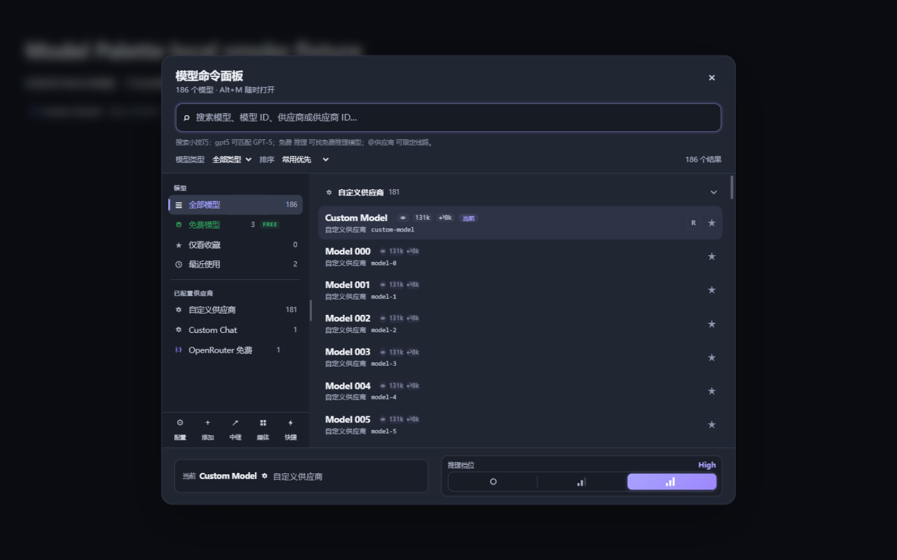
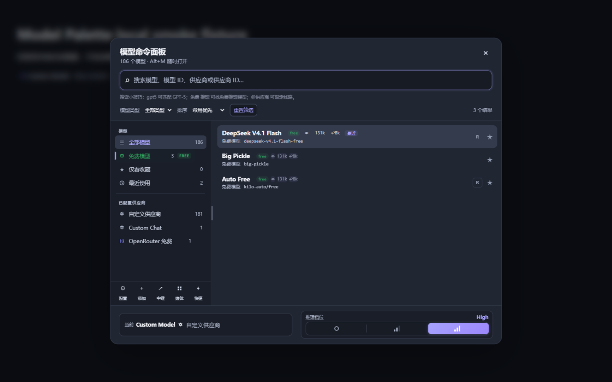
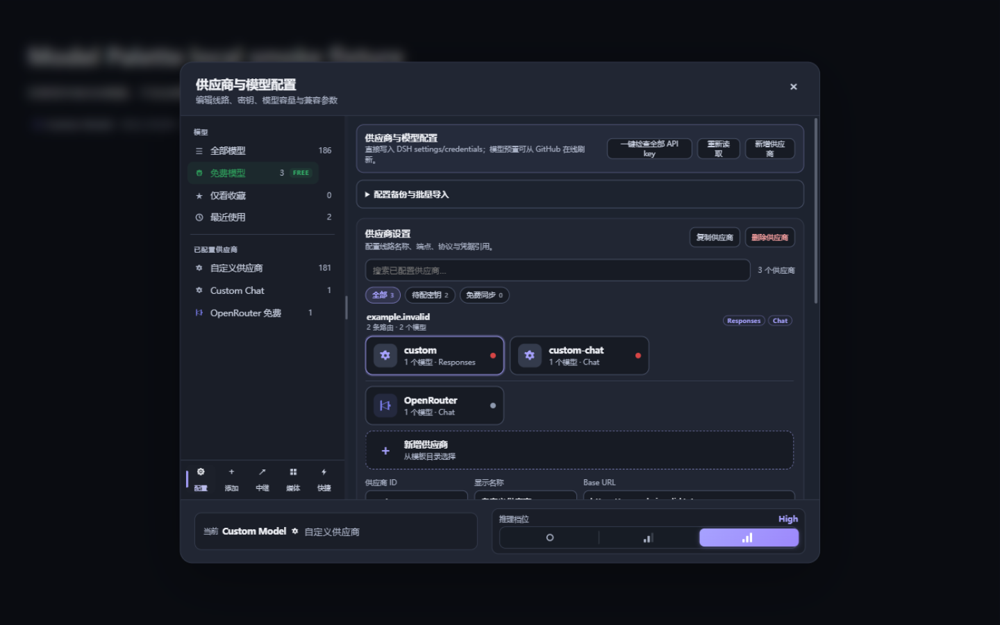
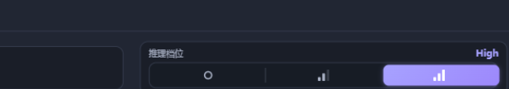

模型切换，一气呵成
DeepSeek Harness 的全局模型命令面板：Alt+M 随处呼出，跨供应商模糊搜索、收藏分组、免登录免费模型、推理档位一键调节。
dsh plugin add github:Jensen-Yao/dsh-model-palette
推理档位 off → low → medium → high → max

01 — FEATURES
一把面板，装下所有模型事务
从免登录免费线路到本地 OpenAI 网关，模型相关的一切都收进同一个命令面板。
免登录免费模型线路
Kilo + OpenCode 免密聚合，无需任何 API Key。侧栏专属绿色区块 + FREE 徽标，能力参数由 models.dev 自动补全。
dsh-free-modelsCodex 式推理档位
递增信号条形梯直观表达推理强度，选中档品牌色高亮，方向键逐档移动，档位随模型声明自动出现。
off → max可拖拽三段式侧栏
模型（全部/免费/收藏/最近）→ 我的供应商 → 底部工具行。宽度 180–440px 拖拽调节并持久化，双击复位。
resizable rail本地 OpenAI 兼容网关
127.0.0.1:4180 提供 /v1/models 与 /v1/chat/completions，流式/JSON 双模式，可挂 DSH 凭据做 Bearer 校验。
loopback :4180供应商配置与备份
线路、密钥、容量与兼容参数直接编辑；选中供应商一键导出 JSON，批量导入支持跳过/合并/复制三种策略。
backup & importOpenRouter 媒体工具
图像与视频生成零配置接入，复用 OPENROUTER_API_KEY，产物落盘 ~/.dsh/media-output，免费模型自动同步。
image · video0内置模型预置
0免登录免费模型
0自动化测试
0个版本迭代
02 — SCREENSHOTS
界面一览
真实产品截图，来自 0.21.1 的本地浏览器验收。



03 — QUICK START
三步上手
tarball 安装、启用插件、呼出面板。
下载并安装
从 GitHub Release 下载 tarball，在 DSH profile 里指向本地文件。
dsh plugin add github:Jensen-Yao/dsh-model-palette # 或 pnpm add file:./dsh-model-palette-0.21.1.tgz
确认已启用
免费线路与本地网关默认开启，可在插件配置中调整。
freeModels: enabled: true gateway: enabled: true port: 4180
呼出面板
在 Web 界面任意位置按快捷键，或点击输入框的模型触发器。
Alt+M 打开 / 关闭面板 Alt+Shift+M 切回上一个模型 Alt+Shift+1..3 快捷方案